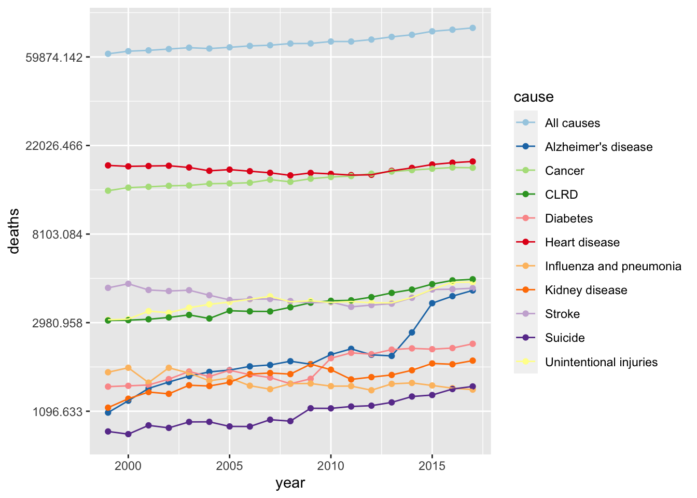

This dataset from the CDC contains the 10 leading causes of death in the US from 1999-2017.The data is derived from resident death certificates filed in the 50 states and D.C. The raw data includes: (1) Year, (2) 113 Cause Name, (3) Cause Name, (4) State, (5) Deaths, and (6) Age-adjusted Death Rate. The Cause Name variable is a simplified version of the 113 Cause Name (as assigned by the International Classification of Diseases) and the Age-adjusted Death rate (per 100,000 population) is calculated based on the US population in 2000. Death rates after 2010 are based on 2010 census.
Link to Dataset: https://data.cdc.gov/NCHS/NCHS-Leading-Causes-of-Death-United-States/bi63-dtpu/data
Rows: 10868 Columns: 6
── Column specification ────────────────────────────────────────────────────────
Delimiter: ","
chr (3): 113 Cause Name, Cause Name, State
dbl (3): Year, Deaths, Age-adjusted Death Rate
ℹ Use `spec()` to retrieve the full column specification for this data.
ℹ Specify the column types or set `show_col_types = FALSE` to quiet this message.
Examine Data
summary(data)
Year 113 Cause Name Cause Name State
Min. :1999 Length:10868 Length:10868 Length:10868
1st Qu.:2003 Class :character Class :character Class :character
Median :2008 Mode :character Mode :character Mode :character
Mean :2008
3rd Qu.:2013
Max. :2017
Deaths Age-adjusted Death Rate
Min. : 21 Min. : 2.6
1st Qu.: 612 1st Qu.: 19.2
Median : 1718 Median : 35.9
Mean : 15460 Mean : 127.6
3rd Qu.: 5756 3rd Qu.: 151.7
Max. :2813503 Max. :1087.3
Create new dataframe “data2”: selecting variables of interest and renaming them Upper case letters and spaces can be a hassle
data2<- data %>%select(Year, `Cause Name`, State, Deaths) %>%rename("year"="Year", #using rename() function to get rid of uppercase and spaces in variable names."cause"="Cause Name","state"="State","deaths"="Deaths")
We have selected variables: Year, Cause of Death, State, and Deaths.
Use filter() to look at Deaths in Georgia
ga<- data2 %>%filter(state %in%"Georgia")
So now we have a final dataset that contains causes of deaths from the years 1999-2017 in Georgia
Save Cleaned data as RDS file in clean_data folder located in dataanalysis_exercise –> data –> clean_data
year cause state deaths
Min. 1999 209 209 847
1st Qu. 2003 character character 1604
Median 2008 character character 3411
Mean 2008 209 209 11130.4545454545
3rd Qu. 2013 character character 14032
Max. 2017 character character 83098
saveRDS(summary_df, file ="dataanalysis_exercise/results/summarytable.rds") #Tells to save as RDS file
year cause state deaths
Min. 1999 209 209 847
1st Qu. 2003 character character 1604
Median 2008 character character 3411
Mean 2008 209 209 11130.4545454545
3rd Qu. 2013 character character 14032
Max. 2017 character character 83098
Looking at the data
To make sure the data loaded correctly, we will look at the summary measures of the dataframe.
summary(ga)
year cause state deaths
Min. :1999 Length:209 Length:209 Min. : 847
1st Qu.:2003 Class :character Class :character 1st Qu.: 1604
Median :2008 Mode :character Mode :character Median : 3411
Mean :2008 Mean :11130
3rd Qu.:2013 3rd Qu.:14032
Max. :2017 Max. :83098
str(ga)
tibble [209 × 4] (S3: tbl_df/tbl/data.frame)
$ year : num [1:209] 2017 2017 2017 2017 2017 ...
$ cause : chr [1:209] "Unintentional injuries" "All causes" "Alzheimer's disease" "Stroke" ...
$ state : chr [1:209] "Georgia" "Georgia" "Georgia" "Georgia" ...
$ deaths: num [1:209] 4712 83098 4290 4399 4866 ...
Some simple exploratory analysis with plots
Let’s look at a a series of boxplots for each year of only the All Cause deaths in Georgia.
#filter for all causes and pull death columnACdeaths <- ga %>%filter(cause =="All causes") %>%pull(deaths)#filter for all causes and pull year columnACyear <- ga %>%filter(cause =="All causes") %>%pull(year)#create boxplotboxplot(formula = ACdeaths ~ ACyear)
While not very informative, we can see that the death rate for All Causes are increasing with each year. Let’s look at a better representation of the data.
First, I want to look at the top category of injuries for GA over 1999 to 2017. To do this, I will plot the number of deaths for each cause for each year.
#scatter plot of year vs deaths by causeggplot(ga, aes(x = year, y = deaths, color = cause)) +geom_point()+geom_line()+scale_y_continuous(trans ="log")+scale_color_brewer(palette ="Paired")

Unlike with the box plot, the all causes line is not increasing as drastically as the boxplot suggested.Looking at the separated causes of death, we can see from the plot that the top causes are heart disease and cancer in Georgia for this time period. One cause of death that I find interesting is the sharp increase in Alzheimer’s disease around 2013.
We can try to fit a model to the Alzheimer’s line to try to predict future trends.
Linear model
#filter for alzheimer's diseaseAD <- ga %>%filter(cause =="Alzheimer's disease")#create fit and summaryfit <-lm(deaths ~ year, data = AD)summary(fit)
Call:
lm(formula = deaths ~ year, data = AD)
Residuals:
Min 1Q Median 3Q Max
-804.16 -337.48 10.23 203.93 879.15
Coefficients:
Estimate Std. Error t value Pr(>|t|)
(Intercept) -278310.97 38525.50 -7.224 1.42e-06 ***
year 139.67 19.19 7.280 1.29e-06 ***
---
Signif. codes: 0 '***' 0.001 '**' 0.01 '*' 0.05 '.' 0.1 ' ' 1
Residual standard error: 458.1 on 17 degrees of freedom
Multiple R-squared: 0.7571, Adjusted R-squared: 0.7429
F-statistic: 53 on 1 and 17 DF, p-value: 1.286e-06
The linear model suggests year is a valid predictor of the number of deaths from Alzheimer’s disease with an expected increase of 139.67 deaths per year.